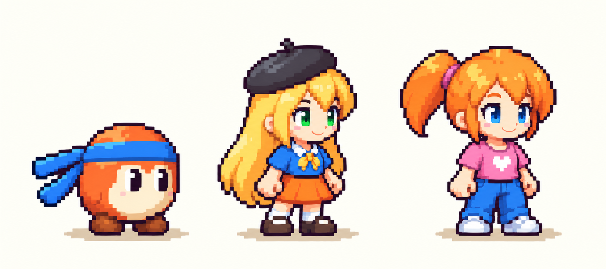

ภาพตัวละครตาม concept — seed v1
Bobo ไม่มีปาก · Mew ตาเขียว · Aclaire ตาฟ้า
ภาพตั้งต้นสำหรับตรวจรูปร่างและชุด ยังไม่ได้แทนตัวละครในเกม
ภาพอ้างอิงที่อนุมัติ

ภาพใหม่บนพื้นสีอ่อน
ทดสอบการอ่านภาพเมื่อย่อ
ประมาณ 1× — คนสูง 40 px
ประมาณ 2×
ประมาณ 4×
ตัวอย่างย่อทั้งภาพเพื่อประเมินความชัด ไม่ใช่เฟรมที่ normalize แล้วหรือภาพจับจากเกม ขนาดแสดงจริงยังขึ้นกับ zoom ของ renderer และหน้าจอ
จุดตรวจ: รูปร่าง ใบหน้า สัดส่วน และชุดตรงกับ concept หรือไม่ ก่อนทำชุดท่าวิ่ง กระโดด ยิง และสถานะพิเศษ